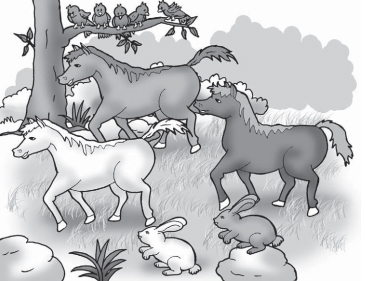
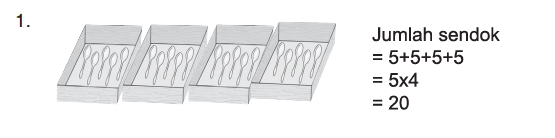
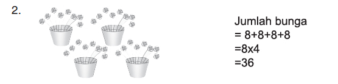
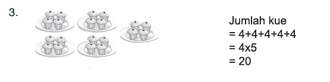
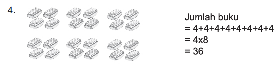
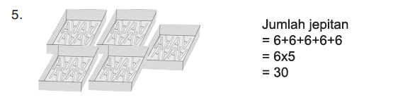

Mengalikan Bilangan (dengan Hasil Bilangan Dua Angka)
1. Mengalikan Dua Bilangan Satu Angka
Perhatikan cuplikan cerita di bawah ini.

Pak Danu pembuat sepatu yang terkenal.
Banyak yang memuji keahlian Pak Danu.
Suatu hari tiga ekor kuda menuju rumah Pak Danu.
Mereka ingin dibuatkan sepatu.
Dua ekor kelinci mengikuti mereka.
Langkah kaki kuda dan kelinci berderap-derap.
Burung-burung di dahan pohon jadi terbangun.
Mereka jadi ingin dibuatkan sepatu juga oleh Pak Danu.
Dalam cerita bergambar ada tiga jenis binatang.
Ketiga jenis binatang tersebut yaitu: kuda, burung, dan kelinci.
Ada tiga ekor kuda, lima ekor burung, dan dua ekor kelinci.
Seekor kuda mempunyai empat kaki.
Seekor burung mempunyai dua kaki.
Seekor kelinci mempunyai empat kaki.
Bentuk 4 + 4 + 4 dapat ditulis menjadi 3 × 4.
Bentuk 2 + 2 + 2 + 2 + 2 dapat ditulis menjadi 5 × 2.
Bentuk 4 + 4 dapat ditulis menjadi 2 × 4.
Contoh :
    